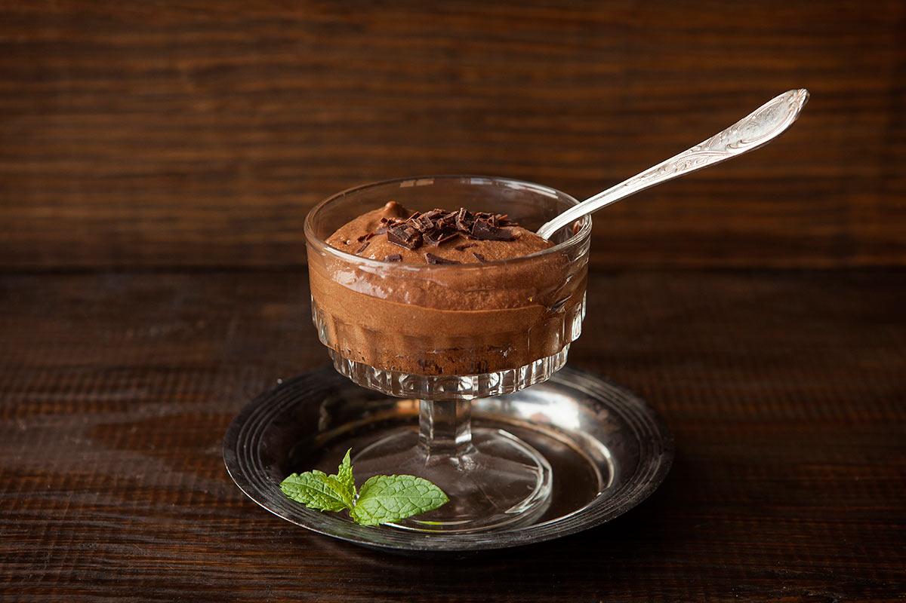

chocomousse

ingridienten
- 30 gr boter
- 20 gr suiker
- 50 ml room
- 100 gr chocolade
- 2 eigelen
- 4 eiwitten
bereiding
- Smelt de boter en de chocolade op een laag vuurtje of gebruik de microgolfoven gedurende 1 minuut. Verwarm
eventueel nog iets langer.
Giet de room erbij.
- de eiwitten op samen met de suiker. Doe de eigelen bij het chocolademengsel en roer eronder.
- Voeg het opgeklopte eiwit bij het chocolademengsel en roer eronder. Belangrijk: zorg dat het allebei op
kamertemperatuur is. Als de chocolade te warm is, wordt het eiwit terug vloeibaar. Is het te koud, dan gaat
het mengsel klonteren.
- Verdeel in potjes en laat gedurende 2 uur opstijven in de koelkast.